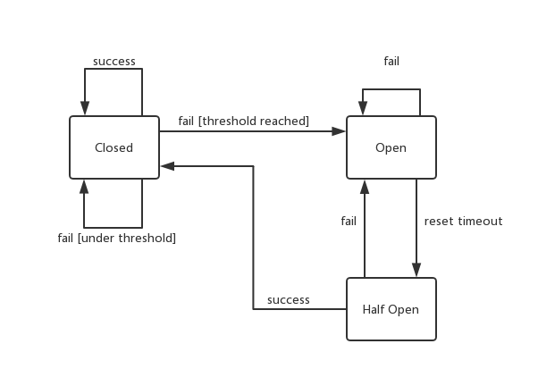
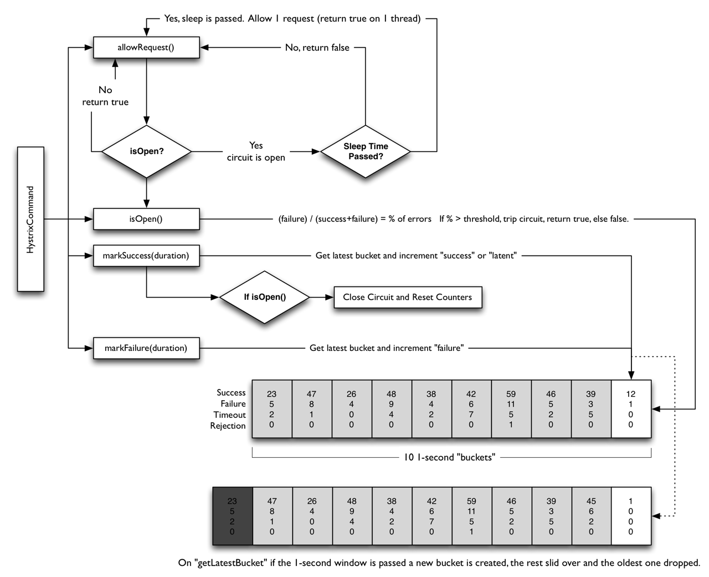

缘起
在分布式系统中，会有很多的RPC调用，当某个服务超载时候，继续接收请求只会让系统变得不可用，甚至会导致多个系统的连锁反应。因此在这样的情况下，最好是把后续的请求挡住，直接返回错误。等到系统恢复正常以后再处理请求。熔断借鉴了电闸中的保险丝功能，当因为某个意外原因（比如插座进水导致短路）导致线路中的电流过大而产生大量热量，保险丝就会被融化掉，从而中断线路中的电流，防止事故发生。
设计
通俗来说，它是一个服务代理（逻辑上说），监测服务的状态，决定是否处理当前的请求，如果不处理返回错误。
服务状态
服务状态一般是通过记录请求失败的情况来表示，比如说服务因为文件句柄占用过多导致一致无法建立连接，从而请求失败，熔断器认为当前服务状态存在不可用情况。
熔断器包含三个状态：
- 关闭（Closed）状态：在这个状态下，请求都会被转发给后端服务。同时会记录请求失败的次数，当请求失败次数在一段时间超过一定次数就会进入打开状态。另外，失败次数会在特定时间间隔内重置。最后，除了基于一段时间内失败次数这个条件以外还可以使用连续失败次数。
- 打开（Open）状态：在这个状态下，熔断器会直接拒绝请求，返回错误，而不去调用后端服务。同时，会有一个定时器，时间到的时候会变成半打开状态。目的假设服务会在一段时间内恢复正常。
- 半打开（Half Open）状态：在这个状态下，熔断器会尝试把部分请求转发给后端服务，目的是为了探测后端服务是否恢复。当请求失败的情况下会进入打开状态，成功情况下会进入关闭状态，同时重置计数。

设计重点
在设计过程中需要考虑以下几个点。
- 错误类型。后端服务会因为不同的问题返回不同的错误信息。针对不同的错误信息，熔断器可以采取不同的策略。比如说，针对限流错误，可以采用重试，如果连接拒绝大概率是服务宕机了，这中情况直接返回错误就可以了。另外，根据不同的错误类型可以使用不同的熔断条件，比如超时的threshold为10， 而连接拒绝的threshold值为3。
- 日志监控。熔断器记录状态变化以及失败的请求应该被记录下来。这些信息反应的服务质量。方便管理员进一步处理。
- 测试服务可用。在半打开状态下，可以通过定制的接口探测后端服务是否恢复，而不是用用户的请求来探测。可以提高服务的质量。
- 返回错误。返回给用户的错误，区分后端服务返回的错误和熔断器产生的错误。
- 手工重置。因为有时候后端服务恢复时间的不确定性，导致熔断器判断失误。提供手工重置，可以方便熔断器的状态切换。
- 并发问题。熔断器需要做计数，多个请求之间存在数据竞争。需要避免熔断器自己的开销影响请求的响应时间。可以采用无锁计数实现。
- 资源区分。有时候，资源是分布在不同的服务器上，是独立。最好，熔断器对请求也做资源区分，针对在不同资源请求做熔断，不然一个资源有问题会影响其他资源的访问。
- 重试错误的请求。有时候，错误和请求的参数有关系。把这部分请求记录下来，可以准备探测后端服务是否恢复。但是要做好重复请求的处理，比如幂等。
实现
Netflix中的Hystrix有一个完整的实现。

流程如下：
allowRequest()通过函数isOpen()判断是否处理请求。isOpen()判断逻辑：- 如果熔断器处在打开状态，并且定时没到，返回
false，请求处理完毕，否则进入半打开状态并返回true，走下一步。 - 如果最近一秒内失败率超过了某个百分比，返回
false，请求处理完毕，否则返回true，走下一步。 - 返回
true，走下一步。
- 如果熔断器处在打开状态，并且定时没到，返回
markSuccess(duration)，表示请求处理成功，更新处理成功次数和处理时间，同时如果熔断器处于打开状态，那么需要重置计数，并把状态变成关闭状态。markFailure(duration)，表示请求处理失败，更新处理失败次数。
Hystrix维护了10个时间间隔为1秒的桶，用于记录请求处理结果成功、失败、超时、拒绝的数量。每过1秒就会创建一个新的桶，如果桶的数量超过10个，最旧的那个会被删除掉。